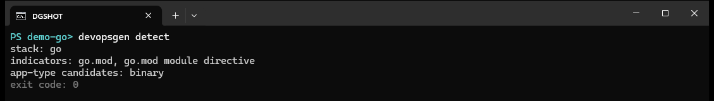

command reference
devopsgen detect
Inspect the current project and report what DevOpsGen would scaffold for it: the programming stack, the exact files that shaped the decision, and the candidate application types.

Reading the output
| Line | Meaning |
|---|---|
stack: go | The detected programming stack (go or nodejs). |
indicators: go.mod, ... | The files that produced evidence — your audit trail for why the stack matched. |
app-type candidates: binary | Application types plausible for this project; the wizard default comes from here too. |
How it decides
- Go —
go.modand its module directive looking likemodule example.com/app. - Node.js —
package.json, plus its dependencies, and lockfile flavours (npm / pnpm) that later steer Docker image commands. - Ambiguity or zero indicators produce a distinct exit code (5) so scripts can branch safely — see exit codes.
Detection semantics: DevOpsGen detects in the current working directory, not in
--output-dir. Run it from the project you want scanned.